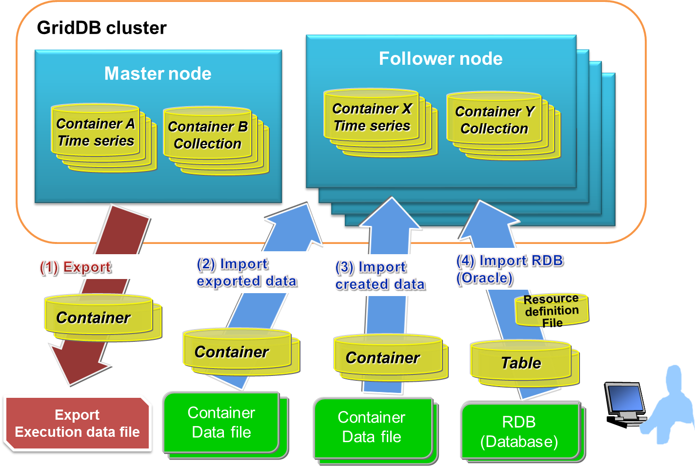

Table of Contents
6.5 Migration from Other Databases¶
In the GridDB export/import tools, to recover a database from local damages or the database migration process, save/recovery functions are provided in the database and container unit.
In addition, there is also a function to link up with RDBs, and RDB data can also be collected and registered in GridDB.
Overview¶
In a GridDB cluster, container data is automatically arranged in a node within a cluster. The user does not need to know how the data is arranged in the node (data position transmission).
There is also no need to be aware of the arrangement position in data extraction and registration during export/import as well. The export/import configuration is as follows.

Export/import configuration
[Export]
(1) Save the container and row data of a GridDB cluster in the file below. A specific container can also be exported by specifying its name.
- Container data file
- Save GridDB container data and row data.
- There are 2 types of format available, one for saving data in a container unit and the other for consolidating and saving data in multiple containers.
- Export execution data file
- Save the data during export execution. This is required to directly recover exported data in a GridDB cluster.
*See the various sections in “What is a container data file” and “What is an export execution data file” for details.
[Import]
(2) Import the container and export execution data file, and recover the container and row data in GridDB. A specific container data can also be imported as well.
(3) Import container data files created by the user, and register the container and row data.
(4) Import RDB (Oracle) data, then correlate and register data from an RDB table to a GridDB container.
[Memo]
- An exported container data file has the same format as the container data file created by a user.
What is a container data file?¶
A container data file is composed of a metadata file and a row data file.
A metadata file is a file in the json format which contains the container type and schema, the index set up, and the trigger data.
There are 2 types of row data files, one of which is the CSV data file, in which container data is stored in the CSV format, and the other is the binary data file in which data is stored in a zip format.
- CSV data file:
- Stores container row data as CSV data. Readability is high, and the file can be imported and edited with generic tools.
- If the row data is a specific data type such as BLOB, spatial data, array etc., the data is stored in an external object file while only the external object file name is stored in a CSV data file. An external object file is created for each row data.
- Binary data file:
- Stores container row data in the zip format. Can be created with the command gs_export only. The file size is smaller when compared to a CSV data file. In addition, the number of files can be reduced as there is no need to create external object files. However, binary data files are not readable and cannot be edited.
See Format of a container data file for details of the contents described in each file.
In addition, there are 2 types of container data files as shown below depending on the number of containers to be listed.
- Single container configuration: holds 1 container data file for each container.
- Multi-container configuration: consolidates multiple containers into a single container data file.
Hereinafter, container data files of various configurations will be written as single container data file and multi-container data file.

Container data file
When a large container is specified as a single container data file and export is executed, management becomes troublesome as a large amount of metadata files and row data files are created. On the other hand, even if a large container is specified as a multi-container data file, only 1 metadata file and row data file is output.
Therefore, it is recommended that these 2 configurations be used differently depending on the application.
A single container data file is used in the following cases.
- When you want to output the current data of a specific container to perform data analysis.
- When you want to create many containers with the same schema as existing containers to register data.
A multi-container data file is used in the following cases.
- You want to backup a specific container group.
- You want to move a database to a different GridDB cluster.
> What is an export execution data file?¶
Data such as the export date and time, the number of containers, the container name etc. are saved in the export execution data file. This file is required to directly recover exported data in a GridDB cluster.
[Memo]
- The file name of an export execution data file is gs_export.json.
- Delete the export execution data if an exported container data file is edited manually. A registration error may occur due to discrepancies in the data.
- When importing without any export execution data file, it is essential that the container metadata file be specified. If not, the import will fail.
- When importing from an RDB, the export execution data file is not required.
Configuration of export/import execution environment¶
The following settings are required to execute an export/import command.
RPM package installation¶
The client package containing the export/import functions and Java library package need to be installed.
[Example]
# rpm -Uvh griddb-client-X.X.X-linux.x86_64.rpm Under preparation… ########################################### [100%] User and group has already been registered correctly. GridDB uses existing user and group. 1:griddb-client ########################################### [100%]
# rpm -Uvh griddb-java_lib-X.X.X-linux.x86_64.rpm Under preparation… ########################################### [100%] 1:griddb-java_lib ########################################### [100%]
Property file settings¶
Configuration file is /usr/gridstore/prop/gs_expimp.properties. Set together with the GridDB cluster configuration used as a gsadm user.
gs_expimp.properties contains the following settings.
Parameters
Default
Description
mode
MULTICAST
Specify the type of connection method. If the method is not specified, the method used will be the multicast method.
MULTICAST ・・ multicast method
FIXED_LIST・・ fixed list method
PROVIDER ・・ provider method
hostAddress
239.0.0.1
Specify the /transaction/notificationAddress in the GridDB cluster definition file (gs_cluster.json). Multicast address used by the export/import tool to access a cluster.
hostPort
31999
Specify the /transaction/notificationPort in the GridDB cluster definition file (gs_cluster.json). Port of multicast address used by the export/import tool to access a cluster.
notificationProvider.url
Specify /cluster/notificationProvide/url of the cluster definition file (gs_cluster.json) when using the provider method to connect.
notificationMember
Specify /cluster/notificationMember/transaction of the cluster definition file (gs_cluster.json) when using the fixed list method to connect. Connect address and port with a “:” in the description. For multiple nodes, link them up using commas.
Example)192.168.0.100:10001,192.168.0.101:10001
restAddress
127.0.0.1
Specify /system/listenerAddress of the GridDB node definition file (gs_node.json). Parameter for future expansion.
restPort
10040
Specify /system/listenerPort of the GridDB node definition file (gs_node.json). Parameter for future expansion.
clusterName
defaultCluster
Specify the cluster name specified when forming a cluster name configuration (specify with the gs_joincluster command).
logPath
/var/lib/gridstore/log
Specify the directory to output the error data and other logs when using the export/import tools Log is output in gs_expimp-YYYYMMDD0.log under the directory.
getCount
1000
Specify the number of rows as a unit to export data when exporting container data with the export tool. When the numerical value becomes larger, the buffer for data processing becomes larger. If the row size is small, raise the numerical value, and if the row size is large, lower the numerical value. The parameter affects the fetch performance for data export.
commitCount
1000
Specify the number of rows as a unit to register data when registering container data with the import tool. When the numerical value becomes larger, the buffer for data processing gets larger too. If the row size is small, raise the numerical value, and if the row size is large, lower the numerical value. The parameter affects the registration performance for data import.
transactionTimeout
2147483647
Specify the time allowed from the start until the end of a transaction. When registering or acquiring a large volume of data, a large numerical value matching the data volume needs to be set. A maximum value has been specified for processing a large volume of data by default. (Unit: second)
failoverTimeout
10
Specify the failover time to repeat retry starting from the time a node failure is detected. This is also used in the timeout of the initial connection to the cluster subject to import/export. Increase the value when performing a process such as registering/acquiring a large volume of data in/from a container. (Unit: second)
rdb.driver
Parameter for RDB linkage. Specify the path of the JDBC driver.
rdb.kind
oracle
Parameter for RDB linkage. Specify the type of RDB “oracle”.
rdb.host
Parameter for RDB linkage. Specify the host name (address)) used to access RDB.
rdb.port
Parameter for RDB linkage. Specify the port no. used to access RDB.
rdb.database
Parameter for RDB linkage. Specify the applicable database name.
rdb.url
Parameter for RDB linkage. Specify the connection character string when accessing the RDB. Specify a set of the host, port and database or the url in the RDB connection destination.
rdb.user
Parameter for RDB linkage. Specify the user to access the target database.
rdb.password
Parameter for RDB linkage. Specify the password of the user to access the target database.
load.input.threadNum
1
Parameter for RDB linkage. Specify the number of processing threads to collect from RDB. (1-64)
load.output.threadNum
1
Parameter for RDB linkage. Specify the number of processing threads to register in GridDB. (1-16)
storeBlockSize
64KB
Specify the block size specified in a GridDB cluster. The upper limit of the string data and binary data that can be registered in GridDB differs depending on the block size.
maxJobBufferSize
512
Specify the buffer size (in MB) to hold collection and registration data.
****\[Memo]****
- When the GridDB version is upgraded, the definition file (/usr/gridstore/prop/gs_expimp.properties) is replaced by a new one.The following message appears when upgrading the version.
Warning: /usr/gridstore-X.X.X/prop/gs_expimp.properties has been saved as /usr/gridstore-X.X.X/prop/gs_expimp.properties.rpmsave.The symbolic link of the directory referenced as the GridDB installation directory (usr/gridstore) will be compared to the newly installed directory, and the definition file used will be saved as gs_expimp.properties.rpmsave in the location where the file was actually located (/usr/gridstore-X.X.X/prop).Compare the definition file used (/usr/gridstore-X.X.X/prop/gs_expimp.properties.rpmsave) and the newly installed definition file (/usr/gridstore-X.X.X/prop/gs_expimp.properties) and reflect the changes appropriately.(gridstore-X.X.X is the GridDB version installed before version upgrade. )
Export function¶
The options that can be specified when using the export function is explained here (based on usage examples of the export function).
Specify process target¶
1. How to specify a container
There are 3 ways to remove a container from a GridDB cluster, by specifying all the containers of the cluster: by specifying the database, and by specifying the container individually.
(1) Specify all containers
- The entirety of the containers and databases in the cluster are applicable.
- –Specify all options.
[Example]
$ gs_export –all -u admin/admin
[Memo]
- When executed by a general user, all the containers in the database (in which the general user has access rights to) will be applicable.
(2) Specify the database
- All containers in the specified database are applicable.
- Specify the database name with the –db option. Multiple database names can also be specified repeatedly by separating the names with a ” ” (blank).
[Example]
$ gs_export –db db001 db002 -u admin/admin //Enumerate DB name. Container in the DB
[Memo]
- When executed by a general user, an error will occur if the general user has no access rights to the database specified in –db. (–Process can continue if executed by force. )
(3) Specify container individually
- Specified container is applicable.
- Enumerate the container name.
- –Separate multiple container names with ” ” (blank) and specify them repeatedly in the container option.
- Regular expression and specification of the container name
- –Specify part of the container name with a container option. A Java regular expression can be used in the specification. Enclose the specification with “” (double quotation) when specifying with a regular expression.
[Example]
$ gs_export –container c001 c002 -u admin/admin //Enumerate container name $ gs_export –container “^c0” -u admin/admin //regular expression specification: Specify containers whose container name start with c0
[Memo]
- Specify the name of the applicable database with the –prefixdb option in the –container option. If the –prefixdb option is omitted, the container in the default connection destination database “public” will be processed.
- When executed by a general user, an error will occur if the general user has no access rights to the database where the container specified in the –container option is stored. (–Process can continue if executed by force. )
2. How to specify a row
Rows located by a search query can be exported by specifying a search query to remove rows from a container.All rows stored in a container which has not been specified in the search query will be exported.
Specify search query
Specify the definition file describing the container name and search query with the–filterfile option. Describe the search query and its corresponding container in the definition file.
[Example] Execution example
$ gs_export -c c001 c002 -u admin/admin –filterfile filter1.txt $ gs_export –all -u admin/admin –filterfile filter2.txt
[Example] Description of definition file
^cont_month :select * where time > 100 [return] ^cont_minutes_.*:select * where flag = 0 [return] cont_year2014 :select * where timestamp > TIMESTAMP(‘2014-05-21T08:00:00.000Z’) [line return]
[Memo]
- Specify the container with a regular Java expression. Example: If “container 1” is used in the description, all containers containing container 1 will be relevant (container 10, container 12 etc.). If fully consistent, use “^container1$” in the description.
- Among the containers subject to export which are specified in the –all and -c options, all rows in containers which the definition described in the definition file does not apply to will be exported.
- To describe the container and search query in 1 line, use a “:” for the separation.
- If the container applies to multiple definitions, the definition described at the beginning will be applied.
- Describe the file in the UTF-8 format.
- Execute the export test function to check whether the description of the definition file is correct.
3. How to specify user access rights
Information on GridDB cluster users and their access rights can also be exported. Use the following command when migrating all data in the cluster.
Specify a –all option and –acl option. However, only user information of a general user can be exported. Migrate the data on the administrator user separately (copy the user definition file).
[Example]
$ gs_export –all -u admin/admin –acl
[Memo]
- The command needs to be executed by an administrator user.
Specifying the output format of a row data file¶
A CSV data file or binary data file can be specified as the output format of a row data file.
Output in the CSV data file
- Execute an export command without specifying the –binary option
Output in the binary data file
- Specify the –binary [file size upper limit] option. Split the binary data file using the specified file size upper limit and export the file. The file size upper limit is specified in Mbytes. If the file size upper limit is not specified, the size upper limit will be 10 Mbytes. The maximum file size that can be specified is 1,000 Mbytes.
[Example]
$ gs_export -c c001 c002 -u admin/admin –binary $ gs_export –all -u admin/admin –binary 500 //divide binary data file into 500 Mbytes each
Specifying the output configuration of container data file¶
A single container data file to create container data file in a container unit, or a multi-container data file to output all containers to a single container data file can be specified.
Output using a single container data file
- If the –out option is not specified during export, the data will be output using a single container data file.
Output using a multi-container data file
- It specifies the –out [file identifier] option. By specifying the file identifier, the file name of the meta data file will become “file identifier_properties.json”. The file will be named “file identifier.csv” or “file identifier.mc” if the multi-container data file format is CSV, or binary respectively.
- If the file identifier is omitted in the –out [file identifier] option, a multi-container data file with time-stamp will be created. (Example: 20131031_155015_810_properties.json, 20131031_155015_810.csv)
[Example]
$ gs_export -c c001 c002 -u admin/admin –out test $ gs_export –all -u admin/admin –out //file is created with the date
Specifying the output destination¶
The directory of the container data file can be specified as the output destination. Create a directory if the specified directory does not exist. If the directory is not specified, data will be output to the current directory when a command is executed. Use the -d option to specify the output destination.
[Example]
$ gs_export –all -u admin/admin –out test -d /tmp
[Memo]
- A directory which already contains container data files cannot be specified.
Specifying the number parallel executions¶
Get data to access a cluster in parallel with the export tool. If a command is executed in parallel on a cluster composed of multiple nodes, data can be acquired at a high speed as each node is accessed in parallel.
Execute in parallel for the specified number by specifying the –parallel option. When executed in parallel, the export data will be divided by the same number as the number of parallel executions. A range from 2 to 32 can be specified.
[Memo]
- The –parallel option can be specified only if the binary format (–binary option) and multi-container format (–out option) are specified.
[Example]
$ gs_export –all -u admin/admin –binary –out –parallel 4
Test execution function¶
Before exporting a container, the user can assess whether the export can be carried out correctly.
Specify test execution
- The export sequence can be checked simply by adding the –test option to the export command. No files will be created as the process simply checks but does not actually acquire any data.
[Example]
$ gs_export -u admin/admin –all –test Start export [Test mode] Output directory: /var/lib/gridstore/export Number of target containers: 5
container_2 : 10 container_3 : 10 container_0 : 10 container_1 : 10 container_4 : 10
Number of target containers: 5 (Success: 5 Failure: 0) Export terminated
Error continuation specification¶
Export processing can be continued even if a row data acquisition error were to occur due to a lock conflict with another application.
By specifying the –force option, the export process will continue from the row data of the next container even if an acquisition error were to occur in a row data.
[Example]
$ gs_export –all -u admin/admin –force
[Memo]
- Regarding containers which skipped the processing due to an error, data will still be output to the container data file even though it is not complete. However, import processing will not be carried out as the data will not be recorded in the export execution file. After resolving the row data acquisition error, execute the export process for the relevant container again.
Other functions¶
Detailed settings in the operating display
- –Processing details can be displayed by specifying the verbose option.
[Example]
$ gs_export -c “^c0” -u admin/admin –verbose Start export Connected to server:/239.0.0.15:31999 Container name list obtained from Gridstore Container name list subject to processing acquired File name list to store container data created Get row data from container data Start CSV format row data file output process: /data/exp/c001.csv Process the next container: c001 Start CSV format row data file output process: /data/exp/c002.csv Process the next container: c002 Start CSV format row data file output process: /data/exp/c010.csv Process the next container: c010 Start CSV format row data file output process: /data/exp/c003.csv Process the next container: c003 Acquisition of row data completed Output container data to metadata file Start metadata file creation process for a single container Metadata file creation process for a single container terminated Output of container data to metadata file completed
Export completed
Success: 4 Failure: 0
Detailed settings in the operating display
- The processing status display can be suppressed by specifying the silent option.
[Example]
$ gs_export -c c002 c001 -u admin/admin –silent
Import function¶
Import the CSV file format or RDB data into the GridDB cluster.
Types of import original data source¶
The input data sources used by the import tool are as follows.
Container data file: container data saved by the export function, or container data created by the user
RDB: Oracle database data
[Memo]
- RDB(Oracle) can specify only input destination with the import tool. It cannot specify an output destination with the export tool.
Importing from a container data file¶
Use the export function to import data in the exported data format into a GridDB cluster.
Specify process target
Processing data to be imported from the container data file needs to be specified.
1. How to specify a container
There are 3 ways to specify a container, by specifying all the containers in the container data file, by specifying the database, and by specifying the container individually.
(1) Specify all containers
- All containers in all the databases are applicable.
- –Specify all options.
[Example]
$ gs_import –all -u admin/admin
(2) Specify the database
- All containers in the specified database are applicable.
- Enumerate a database name
- Specify multiple database names repeatedly by separating the names with a ” ” (blank) in the –db option.
[Example]
$ gs_import –db db001 db002 -u admin/admin //Enumerate DB name. Container in the DB
(3) Specify container individually
- Specified container is applicable.
- Enumerate the container name.
- –Separate multiple container names with ” ” (blank) and specify them repeatedly in the container option.
- Regular expression and specification of the container name
- –Specify part of the container name with a container option. A Java regular expression can be used in the specification. Enclose the specification with “” (double quotation) when specifying with a regular expression.
[Example]
$ gs_import –container c001 c002 -u admin/admin //Enumerat container name $ gs_import –container “^c0” -u admin/admin //regular expression specification: Specify containers whose container name start with c0
[Memo]
- When executed by an administrator user, a database will be created if the database does not exist at the storage location of the container.
- When executed by a general user, an error will occur if the general user has no access rights, or if the database does not exist at the storage location of the container. (–Process can continue if executed by force. )
- Specify the name of the applicable database with the –prefixdb option if the –container option is specified. If the –prefixdb option is omitted, the default connection destination database “public” will be processed.
- When importing NewSQL data, import the data with no NewSQL data existing in the database at the import destination. An error will occur if NewSQL data exists in the database at the import destination. (If the –force option is appended, the NewSQL data causing the error will be skipped)
- Check the container list stored in the container data file with the –list option.
If data is exported by specifying the –acl option in the export function, data on the user and access rights can also be imported. Use the following command when migrating all data in the cluster.
Specify a –all option and –acl option.
[Example]
$ gs_import –all –acl -u admin/admin
[Memo]
- The command needs to be executed by an administrator user.
- Use the following command when migrating all data in the cluster. Execute the command without any databases and general users existing in the migration destination.
Specifying the container data file
Specify the container data file. If this is not specified, the file in the current directory will be processed.
Specify the directory
- Specify the directory address of the container data file using the –d optional command.
- If the directory is not specified, the container data file in the current directory will be chosen instead.
[Example]
//Specify all containers from the current directory $ gs_import –all -u admin/admin
//Specify multiple databases from a specific directory $ gs_import –db db002 db001 -u admin/admin -d /data/expdata
//Specify multiple containers from a specific directory $ gs_import -c c002 c001 -u min/admin -d /data/expdata
[Memo]
- If the export execution data file (gs_export.json) does not exist, e.g. because the container data file is created manually; specify the metadata file (XXXXX_properties.json) using the -f optional command. If the -f command is not specified, import will fail
Get container list
The container data can be checked before it is imported.
[Example]
$ gs_import –list Display the container list of the export data file. DB Name Type FileName public container_2 COLLECTION container_2.csv public container_0 TIME_SERIES container_0.csv public container_1 COLLECTION container_1.csv userDB container_1_db TIME_SERIES userDB.container_1_db.csv userDB container_2_db TIME_SERIES userDB.container_2_db.csv userDB container_0_db COLLECTION userDB.container_0_db.csv
Importing from RDB¶
The following section explains how to import RDB (Oracle) data to a GridDB cluster.
Summary
Basically, importing from RDB is simply done by connecting to the Oracle database, collecting data with a SQL command from the specified table, and registering the data in a GridDB container.

Import from RDB
Data can be imported from RDB with the command below.
$ gs_import -u admin/admin –srcfile resource definition file
Specify the association between the Oracle table and GridDB container (mapping) in the resource definition file.
The following 4 settings can be specified in the json format in the resource definition file. The resource definition file is created in the RDB collection source unit.
- Connection information of RDB collection source/GridDB recovery destination
- RDB collection target table
- GridDB registered container
- Mapping data
Specify the connection information of the RDB collection source/GridDB recovery destination
Configure the RDB connection data serving as the collection source (address, port no., etc.), JDBC driver data, and GridDB recovery destination connection data.
Path of JDBC driver
Property file
RDB connection data of collection source
Property file or resource definition file
GridDB connection data of recovery destination
Property file or resource definition file
[Memo]
- If the connection data has been configured in the resource definition file, use the data in the resource definition file. If the setting is omitted, use the data listed in the property file.
- See the property file and resource definition file for the description format.
Specifying the RDB collection target table
Specify the processing data to be imported from the Oracle database.
(1) Specify the table name
- All columns in the specified table will be applicable.
- If the items select, where, orderby are specified, the data can also be narrowed down by using column filters and conditional filters.
[Example]
“table” : “customers”, “select” : “id, name”, “where” : “id > 5000”
The SQL to be executed is “select id, name from customers where id > 5000”.
(2) Specify the SQL command
- SQL execution result is applicable.
[Example]
select * from table →all columns in a table select id, name, data from customer → id, name, data column
[Memo]
- About the column order when registered in GridDB
- If a table is specified: it will have the same column order as an Oracle table
- If a SQL command is specified: it will have the same column order as specified in SQL
- If you want to change the Oracle table column order and the GridDB column order, either choose “select” for the table specified, or specify the order of the column name by specifying a SQL command.
- Note the column specification order in GridDB as only the first column can be set as the row key.
- The settings in (1) and (2) cannot be used together.
- If the SQL command is specified, the container division to be described later cannot be used.
Specifying a container subject to GridDB registration
Specify a GridDB container at the registration destination.
- Container name
- Container type
- Row key
- Index
- Trigger
- Time series data (if the container type is a time series container)
All registration destination data can be omitted, and association is also possible through automatic conversion of the mapping.
However, if a processing table is specified in a SQL command, the container name must also be specified.
Specifying mapping data
Perform data association between Oracle and GridDB.
1. Auto conversion
Oracle tables will be associated with GridDB containers according to the default rules. The user does not need to perform definition of the conversion.
[Default rules]
Item
Description
Remarks
Container name
Specified table name if the table name is specified
Specified container name if the SQL is specified
Container type
Collection
Column
Name by column in SQL execution results. Specify the column name if names by column do not exist.
Column data type
Data type associated with the RDB column data type.
An error will occur if the Oracle table name and column name do not satisfy the GridDB naming rules (see below).
- Kanji, hiragana and katakana characters are used
- code $ # are used
If the above-mentioned naming rules are not satisfied, append another name to the column by following the procedure in “Specifying the processing table”.[Example]
select price as price from table
Perform association between Oracle data type and GridDB data type as shown below.
Data type
Oracle
GridDB
Remarks
Text data type
CHAR
STRING
VARCHAR2
STRING
Numerical value data type
NUMBER (maximum accuracy, digit)
DOUBLE
NUMBER (maximum accuracy)
LONG
Date data type
DATE
TIMESTAMP
TIMESTAMP
TIMESTAMP
LOB data type
CLOB
STRING
BLOB
BLOB
RAW type
RAW
STRING
ROWID type
ROWID
STRING
[Memo]
- Not compatible with the Oracle extension data type.
- If the data type of the column is an unsupported data type, it will behave as follows.
- If all columns are specified by specifying the tables subject to collection (“table” only specification, or “select” is “*” in a “table” specification), columns with unsupported data types will be skipped, and all other columns will be subject to acquisition.
- For all other cases, an error will occur if there are columns with unsupported data types. However, if a –force option is used, columns with unsupported data types will be ignored and only columns with supported data types will be registered.
2. User definition conversion
The user can define the conversion rules.
Association between Oracle and GridDB is described in the resource definition file.
- The name and type (collection/time series container) of a GridDB container to store table data and SQL result data can be specified by the user.
- The name and data type of a GridDB column can be specified by the user.
The following association can be specified for the data type.
Data type
Oracle
GridDB
Remarks
Text data type
CHAR
STRING, INTEGER
An error will occur if conversion to an INTEGER conversion failed.
VARCHAR2
STRING, INTEGER
An error will occur if conversion to an INTEGER conversion failed.
Numerical value data type
NUMBER (maximum accuracy, digit)
BYTE, SHORT, INTEGER, LONG, FLOAT, DOUBLE
Digits may be dropped if the correct data type is not selected.
NUMBER (maximum accuracy)
BYTE, SHORT, INTEGER, LONG, FLOAT, DOUBLE
Digits may be dropped if the correct data type is not selected.
Date data type
DATE
TIMESTAMP
TIMESTAMP
TIMESTAMP
LOB data type
CLOB
STRING
BLOB
BLOB
RAW type
RAW
STRING
ROWID type
ROWID
STRING
[Memo]
- When converting a NUMBER, the data type can be specified as BYTE/SHORT/INTEGER/LONG/FLOAT/DOUBLE. Digits may be dropped if the correct data type is not selected.
- Data of the character data type and LOB data type data can be stored in GridDB as long as the size allows it. The size of the data that can be stored in GridDB is dependent on the block size of the node (64KB or 1MB). Set the block size of the node in the cluster definition file (gs_cluster.json), and a value that is the same as the setting in the property file.
- If the data type of the column is an unsupported data type, it will behave as follows.
- If all columns are specified by specifying the tables subject to collection (“table” only specification, or “select” is “*” in a “table” specification), columns with unsupported data types will be skipped, and all other columns will be subject to acquisition.
- For all other cases, an error will occur if there are columns with unsupported data types. However, if a –force option is used, columns with unsupported data types will be ignored and only columns with supported data types will be registered.
Table association¶
An Oracle table can be associated with a GridDB containe either:
- (1) 1-to-1
- An Oracle table can be associated with a GridDB container on a 1-to-1 basis.
- (2) 1-to-many
- An Oracle table can be associated with multiple GridDB containers.
There are 2 types of 1-to-many association as shown below.
Column value split: Split a container by the row value
Classify data by the specified row value and store the data in a container for each value. The row value is appended at the end of the container name. (“Container name_row value”)
Since the row value is assigned to the container name, the value has to be made up of alphanumeric characters and the underscore character only. If the name contains a different character type, an error will occur in the check process when a command is executed. An error will not result in the middle of creating a container as the check process is carried out before the container is created. The only row data types that can be specified in a column value split are NUMBER, CHAR and VARCHAR2.
[Memo]
- When specifying a column value split, specify the processing target by the table name.
- For the column to be specified in a column value split, specify the column existing in the processing table, and the column included in the processing column.
- If the value of the column is Null, the name of the container where the data is stored will be “Container name_null”.
[Example] Split the list of sensor data into containers according to the sensor ID

1-to-many: Column value split
Record number split: Split a container by the number of records
Specify the upper limit of a row to be stored in a single container If the upper limit is exceeded, the data is stored in a new container.
A serial number (integer starting from 0) is appended at the end of the container name. “Container name_serial no.” (container_0, container_1, …)
[Example] Split the list of sensor data into containers with 10,000 rows each

1-to-many: Record number split
[Memo]
- Both column value split and record number split can be specified. In this case, processing is carried out by the column value split first followed by record number split.
- In the case of a container split, an error will occur if a container with the same name already exists. Re-registration (–replace) is not possible even if data is added to an existing container (–append) or an existing container is deleted. Invalid even if the –append, –replace option is specified.
● Column association
An Oracle column can be associated with a GridDB column on a 1-to-1 basis.
[Memo]
- If complex association including row consolidation and operation is necessary, create a view according to the conditions on the Oracle DB side and use the view as the acquisition target.
Resource definition file settings
Resource definition files are written in the json format. Specify the RDB (Oracle) data to be connected and the container data which is the recovery destination.
The settings required to connect and import data, to and from RDB (Oracle) are as follows.
Parameters
Description
/inputSource
/type
Specify “rdb” when using a RDB link
/server
Can be omitted. RDB connection destination of the property file is used by default. *1
/kind
Specify the type of RDB. Specify “oracle”
/host
Specify the address used to access RDB.
/port
Specify the port of the address used to access RDB.
/database
Specify the database name (SID)
/url
Specify the connection character string when accessing the RDB. (Specify the host, port, database or url.
/user
Specify the user to access the database.
/password
Specify the user password to access the database.
/outputSource
Can be omitted. GridDB connection destination of the property file is used by default
/type
Specify “gridstore” when registering in GridDB
/server
*1
/host
Specify the address used to access GridDB.
/port
Specify the port of the address used to access GridDB.
/clusterName
/user
Specify the user to access the database.
/password
Specify the user password to access the database.
/targetList
The following can be specified repeatedly in an array
/rdb
Specify the RDB collection targets. Either “table” or “sql” is required
/table
Specify the table name.
/sql
Specify a SQL command
/select
Specify column if the table name is specified
/where
Filter the columns by conditions if the table name is specified
/orderby
Sort the specified columns if the table name is specified.
/partitionTable
Specify true when accessing partition tables in parallel
/gridstore
Specify a GridDB container at the registration destination.
/database
Specify the database name. Registered in the public database “public” by default.
/name
Specify the container name.
Container name may be omitted if the RDB collection target specifies the table name The table name will become the container name.
Container name is required when specifying a SQL command
/type
Specify the container type (COLLECTION/TIME_SERIES)
Container type is a collection by default..
/rowKeyAssigned
Specify whether there is any row key (true/false/omit. *2
/dataAffinity
Specify the data affinity name. Maximum 8 characters
/indexSet
Specify the index. *3
/triggerInfoSet
Specify a trigger. *3
/compressionInfoSet
The compression method (NO/SS) can be specified for time series containers only *3
/mapping
Can be omitted, and the following can be specified repeatedly.
/column
The following can be specified repeatedly
/rdb
Specify the RDB column name.
/gridstore
Specify the GridDB column name
/type
Specify the GridDB column type
/containerSplit
Specify the container split method.
/type
Specify the column value split “columnValue” or record number split “dataNumber”.
/column
For column value split, specify the column value to split.
/number
For record number split, specify the number of records to split.
*1:/inputSource/server/type,host,port,database,user,password Set whether to configure all settings or not for the groups in /inputSource/server.
*2:/targetList/gridstore/rowKeyAssigned true: first column is set as the row key. An error will occur if the data type is not suitable for the row key. false or omitted: No row key will be set.
*3: See Metadata file for the description format of each item.
[Memo]
- Either the “table” specified in the table name or the “sql” specified in the SQL command is required.
- “sql” and “table”,”select”,”where”,”orderby” cannot be specified at the same time.
- When “sql” is specified in the SQL command, the GridDB container name cannot be omitted.
- For partition table (“partitionTable”: true), specify “table” in the table name.
An example of a resource definition file is shown below. Connection data shall be specified in the property file.
[Example] When specifying the table name only
{ “inputSource” : { “type” : “rdb” }, “targetList” : [ { “rdb” : { “table” : “sample_table” } } ] }
[Example] When specifying a SQL command to perform column mapping
{ “inputSource” : { “type” : “rdb” }, “targetList” : [ { “rdb” : { “sql” : “select * from sample_table order by id” }, “gridstore” : { “name” : “sample_collection” }, “mapping” : { “column” : [ {“rdb”: “id”, “gridstore”:”sensor_id”, “type” : “integer”}, {“rdb”: “value”, “gridstore”:”sensor_value”, “type” : “double”} ] } } ] }
[Example] When attaching acquisition conditions targeting multiple tables in the respective table
{ “inputSource” : { “type” : “rdb” }, “targetList” : [ { “rdb” : { “table” : “sample_table”, “select” : “id, value”, “where” : “id > 100”, “orderby” : “id” } }, { “rdb” : { “table” : “sample_table2”, “select” : “*”, “where” : “value > 1000”, “orderby” : “id” } } ] }
[Example] When dividing a table by the column value in the id column, and then further dividing it into 300 records at a time
{ “inputSource” : { “type” : “rdb” }, “targetList” : [ { “rdb” : { “table” : “sample_table”, “orderby” : “id” }, “mapping” : { “containerSplit” : [ {“type”:”columnValue”, “column”:”id”}, {“type”:”dataNumber”, “number”:300} ] } } ] }
Partition table
For Oracle partition tables, the partition unit (sub-partition unit in the case of a composite type) can be accessed in parallel. Using this, data of a partition table can be acquired at a high speed.
When processing a partition table in parallel, set the “partitionTable” item to true in the collection target settings of the resource definition file.
[Memo]
- When processing a partition table in parallel, a sort specified by a ‘order by’ will be carried out on a partition basis and registered in GridDB. As a result, the sorting order of all the tables will not be guaranteed.
- If there is a need to maintain the sorting order for all the tables, do not configure the parallel processing settings for the partition tables (specify false or do not specify the “partitionTable” item). In this case, since the process will not be executed in parallel on a partition basis, the import time may become longer.
Concurrency
The import process can be executed at a higher speed by making access to RDB and GridDB parallel.
When performing parallel processing, specify the –parallel option in the command line.
Collection from RDB and registration in GridDB will be executed respectively with a degree of parallelism that is specified in –parallel. If the degree of parallelism is not specified, the number of GridDB clusters and nodes will automatically become the degree of parallelism
When you want to set in detail the collection parallelism (access to Oracle) and the registration parallelism (access to GridDB), list them down in the property file.
load.input.threadNum=64 load.output.threadNum=16
The registration parallelism (access to GridDB) is best set at the following range: number of GridDB nodes < = N < = (number of GridDB nodes x node concurrency). Set it according to the machine environment.
Command line
Property file
No. of collected threads
No. of registered threads
gs_import
→
1
1
gs_import –parallel 3
→
3
3
gs_import –parallel
input.threadNum=16
→
16
3
output.threadNum=3
gs_import –parallel
Not specified
→
No. of GridDB nodes
No. of GridDB nodes
Preliminary checks and test run
The following items are checked prior to collection and registration processing. Preliminary checks on descriptive errors in the resource definition file and conformity of the specified data are carried out. If an error were to occur in the following checks, the processing of the tools will stop. –The process cannot be continued even if the force option is selected.
Preliminary check items
- Resource definition file
- Errors in the description format
- Omissions of essential items
- Conformity of combination of definitions
- RDB
- Is the table name or column name a valid character string for a container name?
- Data type of column
- In the case of a column value split, is the column name a valid character string for a container name?
Perform a test run if you want to conduct a preliminary check to check out the operation only. Although communications between Oracle and GridDB are carried out during a test run, data registration will not be carried out in GridDB.
To perform a test run, specify the –test option together with the –srcfile option.
[Example]
$ gs_import -u admin/admin –srcfile partition_table.json –test Start import [Test mode] Import test execution terminated. No. of SQL subject to processing: 1920 Import terminated
If an error occurs in the preliminary checks, the following display will appear.
[Example]
$ gs_import -u admin/admin –srcfile not_found_column.json –test Start import [Test mode] D00C0C: A non-existent column has been specified in the mapping definition. : sql=[SELECT * FROM mytable], column=[NOT_FOUND_COLUMN]
SmartEDA/DDS linkage
Data can be registered from Oracle to GridDB by linking the data collection/event processing base SmartEDA with the data collection server (DDS). Data is collected from Oracle using the import tool and sent to the DDS via HTTP The DDS then registers the data received in GridDB. Data can be imported even if it exists in a subnet that does not allow multicast communications between the GridDB cluster and Oracle and the Import tools.
[Memo]
- See /usr/gridstore/misc/dds-plugin/Readme.txt for the operating procedure.
- Data collection/event processing base SmartEDA products are required separately.
- Only the multicast method can be used for connecting a GridDB cluster.
Data registration option¶
When importing, if a specific option is not specified, an error will occur if the container that you are trying to register already exists in the GridDB cluster. Data can be added or replaced by specifying the next option. During data registration, the number of containers registered successfully and the number of containers which failed to be registered are shown.
Add/update data
- Data can be registered and updated in an existing container by specifying the –append option
- Data can be added, registered or updated only if the schema, index and trigger setting data of the container that you are trying to register are the same as the existing container.
- The registration procedure according to the type of container is as follows.
Type of container
Rowkey designation
Operation
Collection
Yes
Columns with the same key will be updated while data with different keys will be added.
None
All row data will be added and registered.
Time series container
Yes
If compression is not specified, the time will be added and registered if it is newer than the existing registration data.
If the time is the same as the existing data, the column data will be updated.
If compression is specified, only rows newer than the existing data can be added.
Replace container
- Delete the existing container, create a new container, and register data in it by specifying the –replace option.
[Example]
$ gs_import -c c002 c001 -u admin/min –append .. Start import (addition mode) Import completed Success: 2 Failure: 0 $ gs_import -c c002 c001 -u admin/admin –replace //From a specific directory .. Start import (re-arrangement mode) Import completed Success: 2 Failure: 0 $ gs_import –all -u admin/admin -d /datat/expdata –replace
Error continuation specification¶
The import process can be continued even if a registration error were to occur in a specific row data due to a user editing error in the container data file.
By specifying the –force option, the import process will continue from the row data of the next container even if a registration error were to occur in the row data.
[Example]
$ gs_import –all -u admin/admin -d /data/expdata –force
[Memo]
- Specify the container replacement option (–replace) to re-register a collection in which an error has occurred after revising the container data file.
Other functions¶
The following section explains the settings in the operating display in detail.
- –Processing details can be displayed by specifying the verbose option.
[Example]
$ gs_import -c c002 c001 -u admin/admin –append –verbose The next character string has been recognized as the container name character string: c002 The next character string has been recognized as the container name character string: c001 Start import (addition mode) Import completed
Success: 2 Failure: 0
The following section explains the settings in the operating display in detail.
- –The processing status display can be suppressed by specifying the silent option.
[Example]
$ gs_import -c c002 c001 -u admin/admin –append –silent
Command/option specifications¶
Export command¶
- Command list
gs_export
-u｜--user user name/password
--all｜--container \[container name\] …｜--db database name \[database name\]
\[-d｜--directory output destination directory path\]
\[--out \[file identifier\]
\[--binary \[file size\]\]
\[--filterfile definition file name\]
\[--count no. of acquisitions\]
\[--parallel no. of parallel executions\]
\[--acl\]
\[--prefixdb database name\]
\[--force\]
\[-t｜--test\]
\[-v｜--verbose\]
\[--silent\]
gs_export
--version
gs_export
\[-h｜--help\]
- Optional specifications
Optional
Essential
Description
-u｜--user user/password
〇
Specify the user and password used for authentication purposes.
--all
〇
All containers of the cluster shall be exported. Either --all, --container or --db option needs to be specified.
-c｜--container container name …
〇
Specify the container to be exported. Multiple specifications are allowed by separating them with blanks. When using a regular expression, enclose it within double quotations to specify it. Either --all, --container or --db option needs to be specified.
--db
〇
All containers in the specified database shall be exported. Either --all, --container, --db option needs to be specified.
-d｜--directory output destination directory path
Specify the directory path of the export destination. Default is the current directory.
--out \[file identifier\]
Specify this when using the multi-container format for the file format of the output data. The single container format will be used by default.
If the file identifier is specified, the file identifier will be used as the file name, and if it is omitted, the output start date and time will be used as the file name.
--binary \[file size\]
Specify this when using the binary format for the output format of the row data file. The CSV format will be used by default.
Specify the output file size in MB. Default is 100MB. A range from 1 to 1000 (1GB) can be specified.
--filterfile definition file name
Specify the definition file in which the search query used to export rows is described. All rows are exported by default.
--count Acquisition count
Specify the number of data to be acquired each time when acquiring data from a container. The value of gs_expimp.properties will be valid by default.
--parallel No. of parallel executions
Execute in parallel for the specified number. When executed in parallel, the export data will be divided by the same number as the number of parallel executions. This can be specified only for the multi-container format (when the --out option is specified). A range from 2 to 32 can be specified.
--acl
Data on the database, user, access rights will also be exported. This can be specified only if the user is an administrator user and --all option is specified.
--prefixdb database name
--If a container option is specified, specify the database name of the container. The containers in the default database will be processed if they are omitted.
--force
Processing is forced to continue even if an error occurs. Error descriptions are displayed in a list after processing ends.
-t｜--test
Execute the tool in the test mode.
-v｜--verbose
Output the operating display details.
--silent
Operating display is not output.
--version
Display the version of the tool.
-h｜--help
Display the command list as a help message.
[Memo]
- - If the t (–test) option is specified, a query will be executed until the data is fetched. Container data file will not be created.
- - If the v (–verbose) option is specified, a message will appear during processing. If omitted, a message will appear only when there is an error.
- Create the respective directory and file if the specified directory path does not exist in the -d (–directory) option, and the specified file name does not exist in the –out option.
- -If a c (–container) option is specified, a Java regular expression can be specified in the container name. See the Java “Class Pattern” for details.
Import command¶
- Command list
gs_import
-u｜--user user name/password
--all｜--container container name \[container name …\]｜--db database name \[database name\]
\[--append｜--replace\]
\[-d｜--directory import target directory path\]
\[-f｜--file file name \[file name…\]\]
\[--count no. of commit\]
\[--acl\]
\[--prefixdb database name\]
\[--force\]
\[-v｜--verbose\]
\[--silent\]
When the input source is other resources:
\[--srcfile file path \[--test\]\]
gs_import
-l｜--list
\[-d｜--directory directory path\]
\[-f｜--file file name \[file name…\]\]
gs_import
--version
gs_import
\[-h｜--help\]
- Optional specifications
Optional
Essential
Description
-u｜--user user/password
〇
Specify the user and password used for authentication purposes.
--all
〇
All containers in the import source file shall be imported. Either --all, --container or --db option needs to be specified.
-c｜--container container name …
〇
Specify the container subject to import. Multiple specifications are allowed by separating them with blanks. When using a regular expression, enclose it within double quotations to specify it. Either --all, --container or --db option needs to be specified.
--db
〇
All containers in the specified database shall be imported. Either --all, --container, --db option needs to be specified.
-d｜--directory directory path
Specify the directory path of the import source. Default is the current directory.
-f｜--file \[file name\]
Specify the container data file to be imported. Multiple specifications allowed. All container data files of the current directory or directory specified in d (--directory) will be applicable by default.
--count no. of commit
Specify the number of input cases until the input data is committed together.
--acl
Data on the database, user, access rights will also be imported. This can be specified only if the user is an administrator user and the --all option is specified for data exported by specifying the --acl option.
--prefixdb database name
--If a container option is specified, specify the database name of the container. The containers in the default database will be processed if they are omitted.
--force
Processing is forced to continue even if an error occurs. Error descriptions are displayed in a list after processing ends.
-v｜--verbose
Output the operating display details.
--silent
Operating display is not output.
--srcfile resource definition file path
Set up the path of the resource definition file. Specify when importing from RDB.
-l｜--list
Display a list of the specified containers to be imported.
--version
Display the version of the tool.
-h｜--help
Display the command list as a help message.
[Memo]
- If -l (–list) is specified, and options other than the -d (–directory) and -f (–file) option are specified, an option argument error will occur.
- - If the v (–verbose) option is specified, a message will appear during processing. If omitted, a message will appear only when there is an error.
- -If a c (–container) option is specified, a Java regular expression can be specified in the container name. See the Java “Class Pattern” for details.
Format of container data file¶
The respective file formats to configure container data files are shown below.
Metadata file¶
The metadata file stores the container data in the JSON format.
[Memo]
- A metadata file is described using the UTF-8 character code.
Container data to be stored is shown below.
Item
Description
Container name
Name of the container.
Container type
Refers to a collection or time series container.
Schema data
Data of a group of columns constituting a row. A column name is combined with a data type to form a group.
Compression configuration data
Compression type data to be configured in a Time series data. Set up thinning compression with error, thinning compression without error, or no compression.
Index setting data
Index type data set in a container. Availability of index settings. Specify the type of index e.g. hash index, spatial index, tree index, etc.
Trigger (event notification) data
Notification is triggered when a container is updated (PUT/DELETE) by the JMS or REST interface.
Row key setting data
Set up a row key when collection container is used. For time series containers, either there is no row key set or the default value, if set, will be valid.
The tag and data items of the metadata in the JSON format are shown below. Tags that are essential for new creations by the user are also listed (tag setting condition).
Tag name
Item
Description
Setting conditions
Common parameters
container
Container name
Container name
Essential
containerType
Container type
Specify either COLLECTION or TIME_SERIES
Essential
containerFileType
Container file type
Specify either csv or binary
Essential
containerFile
Container file name
File name
Essential
dataAffinity
Data affinity name
Specify the data affinity name. Maximum length of 8 characters. (Valid for TIME_SERIES data only)
Any
rowKeyAssigned
Row key setting
Specify either true/false
True if there is no arbitrary key word
partitionNo
Partition
Empty character string that has not been set yet
Arbitrary, output during export. (Need not be specified during import. Value is not used even if it is specified.)
columnSet
Column data set, (schema data)
Column data needs to match when adding data to an existing container
Essential
columnName
Column name
Essential
type
Data type
BOOLEAN/ STRING/ BYTE/ SHORT/ INTEGER/ LONG/ FLOAT/ DOUBLE/ TIMESTAMP/ GEOMETRY/ BLOB/ BOOLEAN[]/ STRING[]/ BYTE[]/ SHORT[]/ INTEGER[]/ LONG[]/ FLOAT[]/ DOUBLE[]/ TIMESTAMP[]
Essential
indexSet
Index data set
Can be set for each column. Non-existent column name will be ignored or an error will be output
Any
columnName
Column name
Arbitrary (essential when indexSet is specified)
IndexType
Index type
HASH ( STRING/ BOOLEAN/ BYTE/ SHORT/ INTEGER/ LONG/ FLOAT/ DOUBLE/ TIMESTAMP ) SPATIAL ( GEOMETRY ) , TREE ( STRING/ BOOLEAN/ BYTE/ SHORT/ INTEGER/ LONG/ FLOAT/ DOUBLE/ TIMESTAMP )
Arbitrary (essential when indexSet is specified)
triggerInfoSet
Trigger setting
Any
eventName
Trigger name
Trigger name
Arbitrary (essential when triggerInfoSet is specified))
notificationType
Notification method
JMS/REST
Arbitrary (essential when triggerInfoSet is specified))
targetEvents
Operations subject to monitoring
PUT/DELETE
Arbitrary (essential when triggerInfoSet is specified
targetColumnNames
Column name
Arbitrary column subject to notification (multiple columns can be specified using commas to separate them), BLOB/GEOMETRY/ARRAY data types can be set but these will not work. The “,” (comma) separator is used, and an error will occur if a non-existent column name is specified.
Notification URI
Notification destination URI
Arbitrary (essential when triggerInfoSet is specified
JmsDestinationType
Destination type
Specify either “topic” or “queue”
Valid for JMS only
JmsDestinationName
Destination name
Arbitrary (essential when notificationType is JMS) Specify for JMS only
user
User name
Arbitrary (essential when notificationType is JMS) Specify for JMS only
password
Password
Arbitrary (essential when notificationType is JMS) Specify for JMS only
TIME_SERIES only parameter
timeSeriesProperties
Compression data setting
Only data whose containerType is TIME_SERIES can be specified
Any
compressionMethod
NO, SS, HI
Any
compressionWindowSize
Maximum period of a row
Specify an integer value
Any
compressionWindowSizeUnit
Time data ENUM
DAY/ HOUR/ MILLISECOND/ MINUTE/ MONTH/ SECOND/ YEAR
Any
expirationDivisionCount
Division count of period release
Specify the division count of period release
Any
rowExpirationElapsedTime
Elapsed period
Specify an integer value
Any
rowExpirationTimeUnit
Time data ENUM
DAY/ HOUR/ MILLISECOND/ MINUTE/ MONTH/ SECOND/ YEAR
Any
compressionInfoSet
Settings for each column
Only Hi can be specified for the compressionMethod
Any
columnName
Column name
Any
compressionType
Absolute value/relative value
RELATIVE: Relative value, ABSOLUTE: Absolute value
Any
Width
Absolute error exists. Thinning and compression parameters
Can be specified by a floating-point number
Any Essential for specified column Error when specified at the same time as Rate/Span
Rate
Relative error exists. Thinning and compression parameters
Can be specified by a floating-point number
Any can be set only when compressionMethod is set to HI. In SS/NO, error is ignored/output. Error occurs if width is specified at the same time
Span
Relative error exists. Thinning and compression parameters
Can be specified by a floating-point number
Any can be set only when compressionMethod is set to HI. In SS/NO, error is ignored/output. Error occurs if width is specified at the same time
[Memo]
- Container metadata is described in the json format in the metadata file of a single container data file.
- Container metadata is described in a json array in the metadata file of a multi-container data file.
- Met data file name of a single container data file
- Container name_properties.json
- Metadata file name of a multi-container data file
- Specify a file identifier with an –out option: file identifier_properties.json
- Omit the file identifier with an –out option: Date and time_properties.json
[Points to note]
- Do not edit metadata files if row data files are exported in the binary format.
[Example1] Example of a collection in a single container file (c001_properties.json)
- A single collection is described.
1: { 2: “container”: “c001”, 3: “containerFile”: “c001.csv”, 4: “containerFileType”: “csv”, 5: “containerType”: “COLLECTION”, 6: “columnSet”: [ 7: { “columnName”: “COLUMN_ID”, “type”: “INTEGER” }, 8: { “columnName”: “COLUMN_STRING”, “type”: “STRING”} 9: ], 10: “indexSet”: [ 11: { “columnName”: “COLUMN_ID”, “type”: “TREE”}, 12: { “columnName”: “COLUMN_ID”, “type”: “HASH”}, 13: { “columnName”: “COLUMN_STRING”, “type”: “HASH” } 14: ], 15: “rowKeyAssigned”: true 16: } 17:
[Example 2] Example of a collection and time series container in a multi-container file (container01_properties.json)
- For collections and time series containers
1: 2: [ 3: { 4: “container”: “c001”, 5: “containerType”: “collection”, //for collection 6: “containerFileType”:”csv”, 7: “containerFile”:”container01.csv”, 8: “rowKeyAssigned”:true, 9: “columnSet”: [ 10: { “columnName”: “COLUMN_FLAG”, “type”: “BOOLEAN” }, 11: { “columnName”: “COLUMN_BLOB_DATA”, “type”: “BLOB” }, 12: { “columnName”: “COLUMN_STRING”, “type”: “STRING” } 13: ], 14: “indexSet”:[ 15: { “columnName”:” COLUMN_STRING “, “indexType”: “HASH” } 16: ], 17: “triggerInfoSet”:[ 18: { “eventName”:” FLAG_EVENT”, “notificationType”:”JMS”, 19: “targetEvents”:”DELETE”, “targetColumnNames”:”COLUMN_FLAG”, 20: “notificationURI”:”http://example.com”, 21: “JmsDestinationType”:”“, “JmsDestinationName”:”“, 22: “JmsUser”:”“, “JmsPassword”:”” }, 23: { “eventName”:”STRING_EVENT”, “notificationType”:”REST”, 24: “targetEvents”:”PUT”, “targetColumnNames”:”COLUMN_STRING”, 25: “notificationURI”:”” } 26: ] 27: }, 28: { 29: “container”: “c002”, 30: “containerType”: “timeSeries”, //for time series container 31: “containerFileType”:”csv”, 32: “containerFile”:”container01.csv”, 33: “rowKeyAssigned”:true, 34: “dataAffinity”:”month”, 35: “columnSet”: [ 36: { “columnName”: “COLUMN_TIMESTAMP”, “type”: “TIMESTAMP” }, 37: { “columnName”: “COLUMN_FLAG”, “type”: “BOOLEAN” }, 38: { “columnName”: “COLUMN_BLOB_DATA”, “type”: “BLOB” }, 39: { “columnName”: “COLUMN_INTEGER”, “type”: “INTEGER” } 40: ], 41: “indexSet”:[ 42: { “columnName”:” COLUMN_FLAG “, “indexType”: “TREE” } 43: ], 44: “triggerInfoSet”:[ 45: { “eventName”:”TIMESTAMP_EVENT”, “notificationType”:”REST”, 46: “targetEvents”:”DELETE”, “targetColumnNames”:”COLUMN_TIMESTAMP”, 47: “notificationURI”:”“, 48: “JmsDestinationType”:”“, “JmsDestinationName”:”“, 49: “JmsUser”:”“, “JmsPassword”:”” } 50: ], 51: “timeSeriesProperties”:[ 52: { “compressMethod”: “HI”, 53: “compressionWindowSize”:10, “compressionWindowSizeUnit”:”SECOND”, 54: “expirationDivisionCount”:12, 55: “rowExpirationElapsedTime”: 1, “rowExpirationTimeUnit”: “DAY”} 56: ], 57: “compressionInfoSet”:[ 58: { “columnName”:COLUMN_INTEGER”, ”compressionType”:”RELATIVE”, 59: “rate”:”1.0E2”, “span”:”1.0E2” } 60: ] 61: } 62: ] 63:
Row data file (binary data file)¶
The row data file in the binary format can be created in the zip format by gs_export only. No readability, and cannot be edited as well. No readability, and cannot be edited as well.
Row data file (CSV data file)¶
The row data file in the CSV format describes the references to the metadata file which is the definition of a row in the container data file information section.
[Memo]
- A CSV data file is described using the UTF-8 character code.
1. Header section (1st - 2nd row)
Header section contains data output during export. Header data is not required during import.
Assign a “#” at the beginning of the command to differentiate it. The format will be as follows.
“# (Date and time data) (blank)GridDB release version” “#User: (user name)”
[Example]
“#2013-06-14T17:34:36.520+0900 GridStore V1.5.00” “#User:admin “
2. Container data file data section (3rd and subsequent rows)
Describe the references to the metadata file.
Assign a “%” at the beginning of the command to differentiate it. The format of one row will be as follows.
“%”,”(container name)_properties.json”
3. Row data section (container data and subsequent sections)
The following section describes the row data.
Assign a “$” at the beginning of the container name and describe the row data for the number of cases that you want to register in the container.
Separate the row data of the column with commas and describe them in one line of the CSV file.
“$”,”(Container name)” “value”,”value”,”value”,．． (number of column definitions) “value”,”value”,”value”,．． (number of column definitions) : : //Describe the number of row cases you want to register :
4. Comments section
The comment section can be described anywhere in the CSV data file except the header section.
- Assign a “#” at the beginning of the command to differentiate it.
[Memo]
- The CSV data file of a single container data file is configured as follows.
- 1. Header section, 2. Container data file data section, 3. Row data section
- The CSV data file of a multi-container data file is configured as follows.
- 1. Header section, 2. Container data file data section, 3. Row data section (multiple)
The name of the CSV data file output by the export tool is as follows.
- container_name.csv for single container data files
- file_identifier.csv for multi-container data files and when the file identifier is specified in the –out option
- date&time.csv for multi-container data files and when the file identifier is omitted in the –out option
[Example] Description of a CSV data file (including external object file) Data description of a metadata file in Example 1
“#2013-11-01T11:19:03.437+0900 GridStore V1.5.00” “#User:admin” “%”,”c001_properties.json” “$”,”c001” “1”,”Tokyo” “2”,”Kanagawa” “3”,”Osaka”
When the data below is included in some of the rows of the CSV data file, prepare an external object file separate from the CSV data file as an external object. List the references of the external data file in the target column of the CSV file. “@data type:” (file name)
- BLOB data
- List “@BLOB:” + (file name) as BLOB data in the “value” section of the relevant column.
- The file naming section has a format which is the file name + “.blob”.
- The binary file is located according to the rules of the file naming section.
- Spatial data
- List “@GEOMETRY:” + (file name) as GEOMETRY data in the relevant “value” section.
- The file naming section has a format which is the file name + “.geometry”.
- List a spatial column in the external object file.
- Describe using character code UTF-8.
- Array (BOOLEAN[]/ STRING[]/ BYTE[]/ SHORT[]/ INTEGER[]/ LONG[]/ FLOAT[]/ DOUBLE[]/ TIMESTAMP[])
- List “@(Data Type)_ARRAY:” + (file name) as ARRAY data in the relevant “value” section.
- The file naming section has a format which is the file name + “.(data type)_array”.
- If the length of the character string exceeds 100 characters, list down array data in the external object file.
- Describe using character code UTF-8.
- Character string data
- List “@STRING:” + (file name) as STRING data in the relevant “value” section.
- The file naming section has a format which is the file name + “.string”.
- If the length of the character string exceeds 100 characters, or if it includes a line return (\r), list down string data in the external object file.
- Describe using character code UTF-8.
When an external object file is exported, the external object file name is created in accordance with the following rules during export.
- For single container data files
- Container name_Container name_ROW No. _COLUMN No.data type
- If the container column is a Byte array, the name of the external object file will be Container name_Container name_ROW no. _COLUMN no. .byte_array.
- The ROW no. and COLUMN no. shows the sequence no. of the container data and they are numbered starting from 0.
- When the format is a multi-container format
- File identifier specified in the –out option File identifier_Container name_ROW no. _COLUMN no.data type
- File identifier omitted in –out option Date and time_Container name_ROW no. _COLUMN no.data type
For import purposes, any file name can be used for the external object file. List down the CSV data file with a file name of any data type in the relevant column.
[Example] Naming example of an external object file
//When a collection (colb) having a BYTE array in the 3rd column is exported Oct 4 12:51 2013 colb.csv Oct 4 12:51 2013 colb_colb_0_3.byte_array Oct 4 12:51 2013 colb_colb_1_3.byte_array Oct 4 12:51 2013 colb_colb_2_3.byte_array Oct 4 12:51 2013 colb_colb_3_3.byte_array Oct 4 12:51 2013 colb_colb_4_3.byte_array Oct 4 12:51 2013 colb_properties.json
[Example] Description of an external object file in a single container data file is shown below.
// meta data file col01_properties.json
{ “container”: “col01”, “containerFile”: “col01.csv”, “containerFileType”: “csv”, “containerType”: “COLLECTION”, “columnSet”: [ { “columnName”: “name”,”type”: “string” }, {“columnName”: “status”, “type”: “boolean”}, { “columnName”: “count”, “type”: “long” }, { “columnName”: “lob”, “type”: “byte[]” } ],”indexSet”: [ { “columnName”: “name”, “type”: “TREE” }, { “columnName”: “count”, “type”: “TREE” } ], “rowKeyAssigned”: true }
//CSV data file col01.csv
“#2013-11-01T19:41:35.320+0900 GridStore V1.5.00” “#User:admin” “%”,”col01_properties.json” “$”,”col01” “name02”,”false”,”2”,”@BYTE_ARRAY:col101_col01_0_3.byte_array”
// external object file col01_col01_0_3.byte_array
1,10,15,20,40,70,71,72,73,74